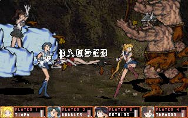
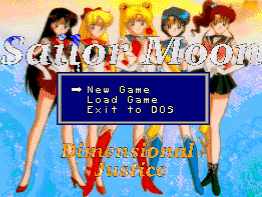
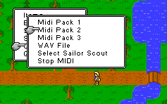

Sailor Moon - PC Games
Sailor Moon Solitaire puts the Sailor Senshi on the deck of cards
you are using.

Sailor Moon World is
a freeware game designed by Tim Yep. The code is currently undergoing a massive
re-write. While the demo is only 35% complete, it shows promise especially since it boasts handling four simultaneous
players.
Warriors of Love is a freeware project in its infancy. No playable
demo currently; just a plea for help.

Dimensional Justice is a freeware RPG project.

Sailor Moon RPG Project is in its infancy. Plenty of
opportunities available to help out with the project.
Anime Video Game Resource Center © 1998 by Luis A. Cruz